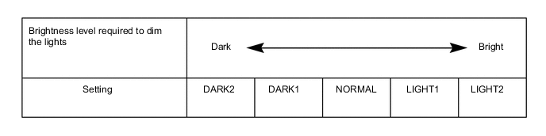
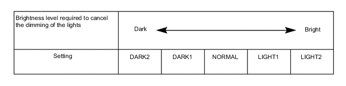
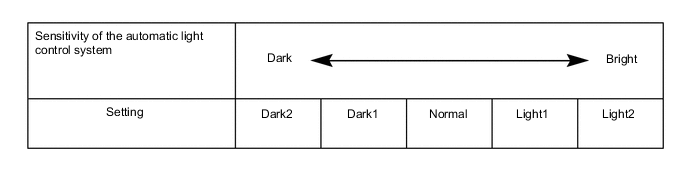
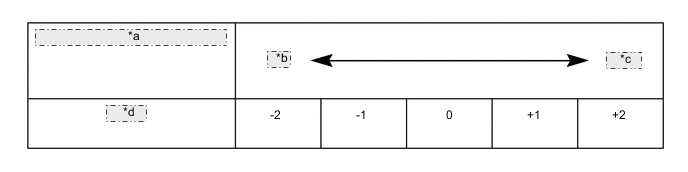

CUSTOMIZE LIGHTING SYSTEM (EXT)
Note
When the customer requests a change in a function, first make sure that the function can be customized.
Be sure to make a note of the current settings before customizing.
When troubleshooting a function, first make sure that the function is set to the default setting.
Tech Tips
The following items can be customized.
Customizing with the GTS
Connect the GTS to the DLC3.
Turn the power switch on (IG).
Turn the GTS on.
Enter the following menus: Customize Setting / Light Control or Warning.
Select the setting by referring to the table below.
| Tester Display | Description | Default | Setting | ECU |
|---|---|---|---|---|
| Disp Ex ON Sen | Changes the ambient brightness level required to dim the lights such as the indicator lights of the combination meter, A/C indicator light and clock.*A | NORMAL | 000:NORMAL,001:DARK2,010:DARK1,011:LIGHT1,100:LIGHT2 | Main Body ECU (Multiplex Network Body ECU) |
| Disp Ex OFF Sen | Changes the ambient brightness level required to cancel the dimming of the lights such as the indicator lights of the combination meter, A/C indicator light and clock.*B | NORMAL | 000:NORMAL,001:DARK2,010:DARK1,011:LIGHT1,100:LIGHT2 | Main Body ECU (Multiplex Network Body ECU) |
| Sensitivity | Adjusts the sensitivity of the automatic light control system.*C | Normal | 000:Normal,001:Dark2,010:Dark1,011:Light1,100:Light2 | Main Body ECU (Multiplex Network Body ECU) |
| Follow Me Home Lighting Time | Sets the headlight lighting time after the power switch is turned off.* | 30 s | 00:30 s,01:60 s,10:90 s,11:120 s | Main Body ECU (Multiplex Network Body ECU) |
*: w/ Follow Me Home System
Tech Tips
The sensitivity adjustment may be difficult to confirm. Check by driving the vehicle.
*A

*B

*C

| Tester Display | Description | Default | Setting | ECU |
|---|---|---|---|---|
| Lane Change Flashing Times Setting | Function to change the lane change flashing times. | 3 | 000:OFF,001:3,010:4,011:5,100:6,101:7 | Combination Meter Assembly (Meter Circuit Plate) |
Customizing with the multi-display (w/ Multi-display)
Turn the power switch on (IG).
Enter the following menus:
for Navigation Receiver Type: MENU / SETUP / Vehicle / Vehicle customization / Lights Settings.
for Radio and Display Type: MENU / Setup / Vehicle / Vehicle customization / Lights Settings.
Select the setting by referring to the table below.
| Display | Default | Content | Setting | Relevant ECU |
|---|---|---|---|---|
| Light sensor sensitivity | 0 | Adjusts the sensitivity of the automatic light control system.*A | -2, -1, 0, +1 or +2 | Main Body ECU (Multiplex Network Body ECU) |
| Headlamps Auto-Off Timer* | 30 sec. | Keeps the headlights on for a certain period of time after turning the power switch off and closing all of doors with the low beam headlights on. | Off, 30 sec., 60 sec. or 90 sec. | Main Body ECU (Multiplex Network Body ECU) |
*: for vehicles with customize setting "Headlamps Auto-Off Timer"
Tech Tips
The sensitivity adjustment may be difficult to confirm. Check by driving the vehicle.
*A

| *a | Sensitivity of the automatic light control system |
| *b | Dark |
| *c | Bright |
| *d | Setting |
Customizing with the multi-information display (combination meter assembly (meter circuit plate)) (w/o Multi-display)
Turn the power switch on (IG).
Select the setting tab in the multi-information display.
Enter the following menus: Vehicle settings / Lights settings.
Select the setting by referring to the table below.
| Display | Default | Content | Setting | Relevant ECU |
|---|---|---|---|---|
| Light sensor sensitivity | 0 | Adjusts the sensitivity of the automatic light control system.*A | -2, -1, 0, +1 or +2 | Main Body ECU (Multiplex Network Body ECU) |
| Headlamps Auto-Off Timer* | 30 sec. | Keeps the headlights on for a certain period of time after turning the power switch off and closing all of doors with the low beam headlights on. | Off, 30 sec., 60 sec. or 90 sec. | Main Body ECU (Multiplex Network Body ECU) |
*: for vehicles with customize setting "Headlamps Auto-Off Timer"
Tech Tips
The sensitivity adjustment may be difficult to confirm. Check by driving the vehicle.
*A
| *a | Sensitivity of the automatic light control system |
| *b | Dark |
| *c | Bright |
| *d | Setting |